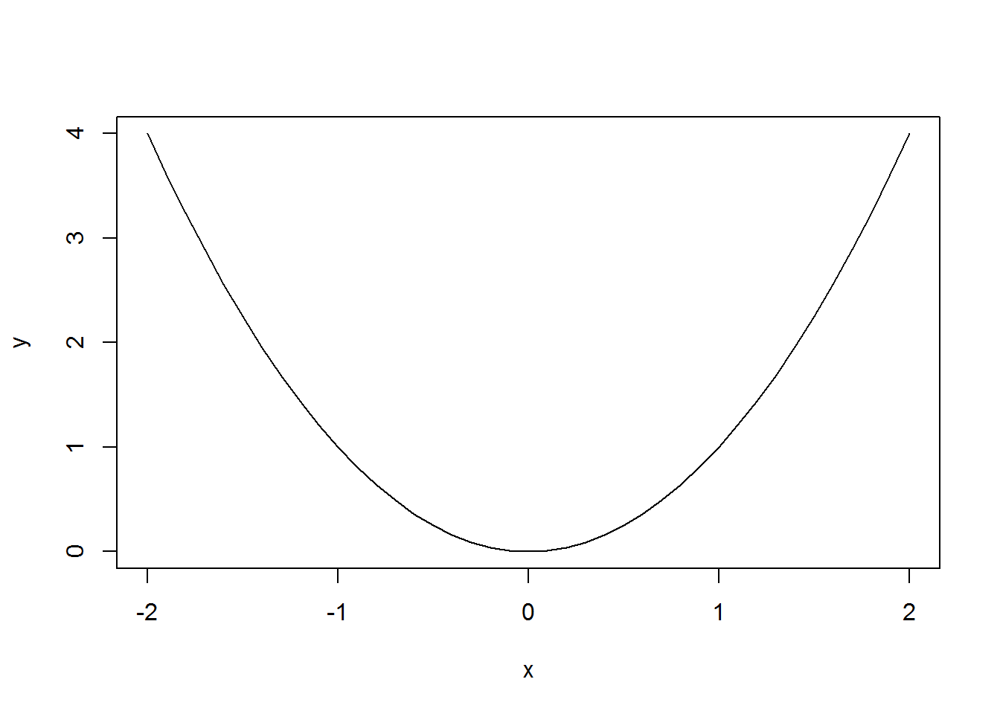
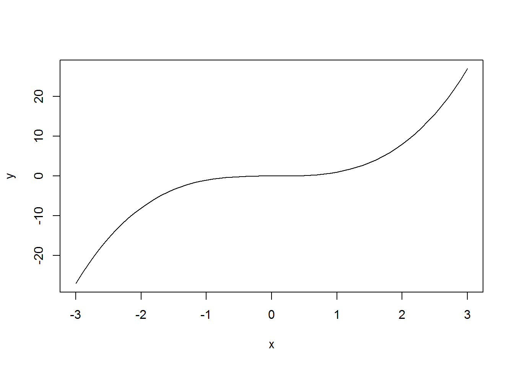

Run SimpleGraph.R
# specify vector of x values
x <- seq(from = -2, to = 2, by = 0.1)
# specify corresponding y values
y <- x^2
# plot x,y points
plot(x, y, type = "l")
Adapt the SimpleGraph.R code so it plots a cubic function (y = x^3) over the interval [-3, 3].
# specify vector of x values
x <- seq(from = -3, to = 3, by = 0.1)
# specify corresponding y values
y <- x^3
# plot x,y points
plot(x, y, type = "l")